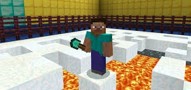

Spleef overview

Spleef is a classic minecraft minigame which has players battle on a fragile snow surface above a lava bed.
Special Rules
- Players are only allowed to destroy snow blocks, the plugin will cancel all other block destruction
- This version allows the player to select a team color, any friendly damage is cancelled
- No respawn is allowed, a player that dies will become a spectator on respawn
- The game is over when all the players on one color team dies